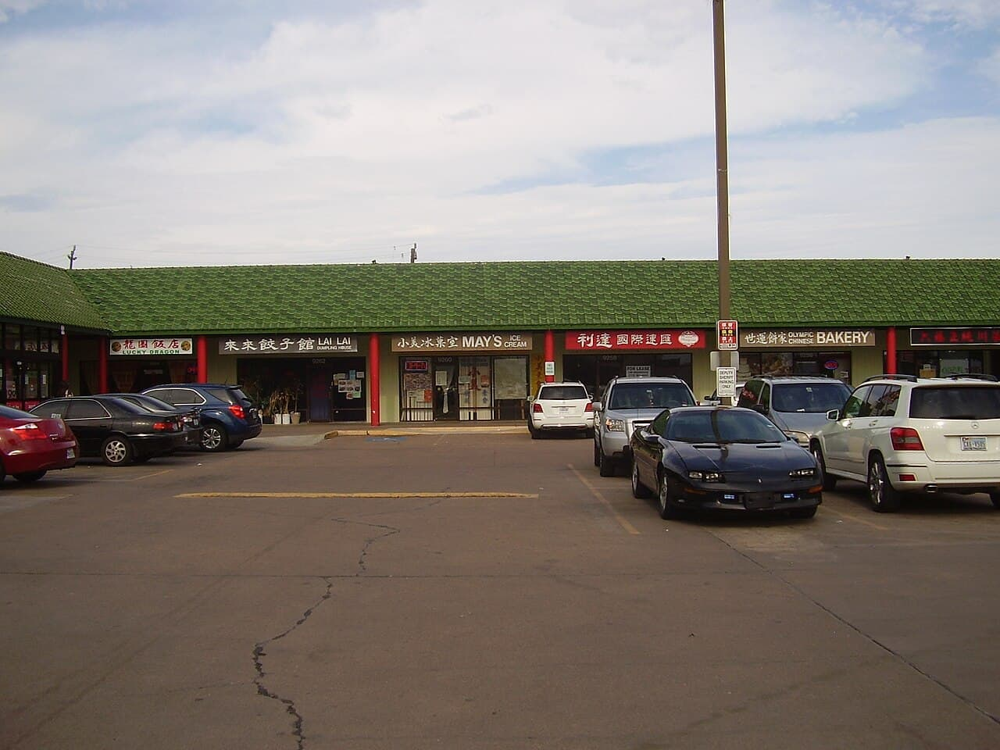
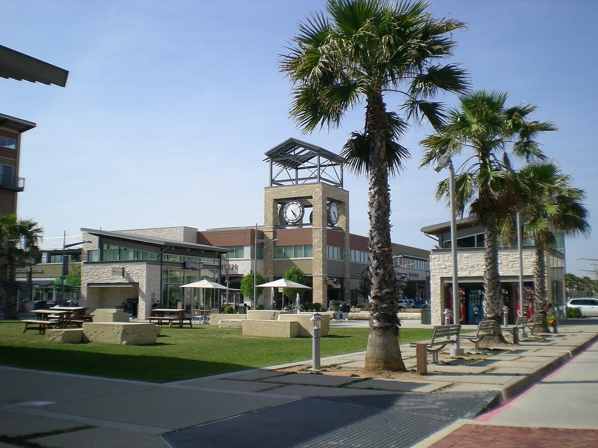

Katy / Fulshear
新移民华人增长活跃，新房与大型规划社区集中。代表社区包括 Cinco Ranch、Elyson、Cross Creek Ranch 与 Jordan Ranch，兼顾学区、环境和家庭生活。
电话+1 346 582 7694
邮箱ningimeng12@gmail.com
微信ningimengyanyan
SPACE CITY · BAYOU CITY
休斯顿是美国最具活力和包容力的都会区之一。能源、医疗、航天、制造与国际贸易共同支撑着多元经济，也让这里持续吸引来自世界各地的家庭与专业人才。
宽阔的城市空间、丰富的社区选择、成熟的华人生活圈，以及相对友好的居住成本，让休斯顿同时适合家庭自住与长期资产配置。从市中心都市生活到西部优质社区，每一种生活方式都能找到对应的选择。
从成熟华人生活圈到快速成长的新社区，
找到适合您家庭节奏的休斯顿生活半径。
新移民华人增长活跃，新房与大型规划社区集中。代表社区包括 Cinco Ranch、Elyson、Cross Creek Ranch 与 Jordan Ranch，兼顾学区、环境和家庭生活。
休斯顿成熟的华人生活圈，亚洲超市、中餐、医疗与中文教育资源丰富。Riverstone、Telfair、Greatwood 等社区生活便利、配套完整。

休斯顿亚洲商业中心，餐饮、超市、中医和亚洲商品高度集中。住宅较成熟，适合重视生活便利、医疗中心通勤或投资出租的买家。
快速成长的新房区域，房价通常比 Katy 更具亲和力。Bridgeland、Towne Lake 与 Fairfield 规划完善，华人家庭数量持续增加。
森林环绕、环境优美，学区与社区管理表现突出。适合医生、企业高管、油气行业从业者及重视空间和居住品质的家庭。

连接 Texas Medical Center 与 NASA 的便利选择，房价相对合理、社区成熟。受到医学中心工作人员、医生与航天行业家庭关注。
SCHOOLS & COMMUNITIES
休斯顿都会区的学区边界与社区并不完全重合。同一社区、甚至同一条街的不同房屋，都可能对应不同学校。Amy 会结合家庭需求，逐套确认地址对应学校与社区信息。
休斯顿西部家庭关注度较高的学区，覆盖多个成熟社区与大型新房社区。
访问学区官网 ↗社区类型多元，生活配套成熟，部分学校长期受到华人家庭关注。
访问学区官网 ↗伴随西南部新社区快速发展，近年来成为新房买家的重要选择。
访问学区官网 ↗覆盖休斯顿西北部广阔区域，拥有成熟社区与持续扩张的新规划社区。
访问学区官网 ↗服务 The Woodlands 及周边社区，适合重视自然环境与社区品质的家庭。
访问学区官网 ↗靠近医学中心与南部就业区，是兼顾通勤、社区生活和教育需求的选择。
访问学区官网 ↗学区边界、学校分配及相关信息可能调整，购房前应以学区和学校官方查询结果为准。
HOUSTON IN FOCUS
通过中文视频分享房市趋势、热门社区、学区信息与置业知识，让您在看房之前先建立清晰判断。
A CLEAR PATH HOME
跨城市、跨国家买房也可以很从容。Amy 会提前告诉您每个阶段需要准备什么，以及下一步会发生什么。
AMY'S HOUSTON NOTES
房市趋势、热门社区、学区信息、新房探访与买房知识，用中文整理成值得长期参考的文章。
阅读房产博客 ↗LET'S TALK
告诉 Amy 您的计划。无论仍在初步了解，还是已经准备看房，都欢迎轻松聊聊。